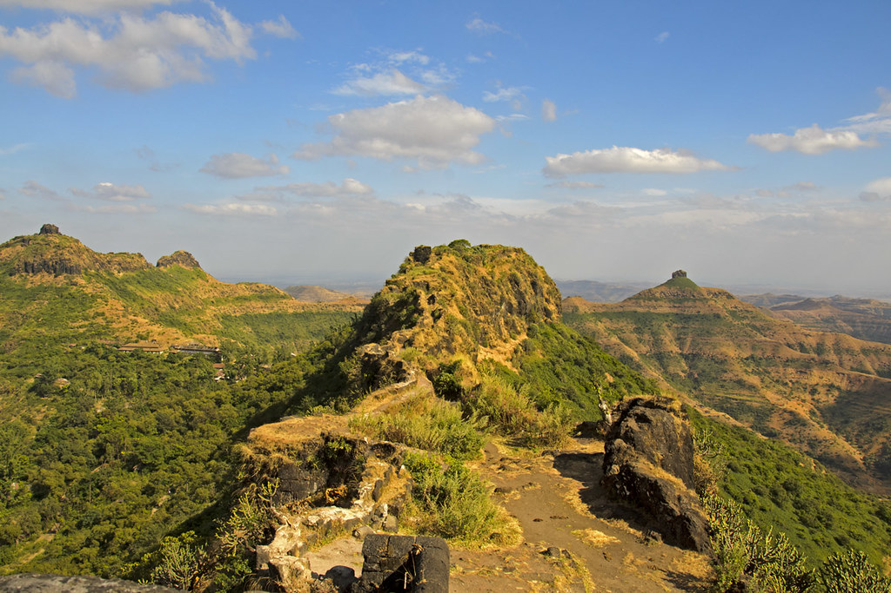
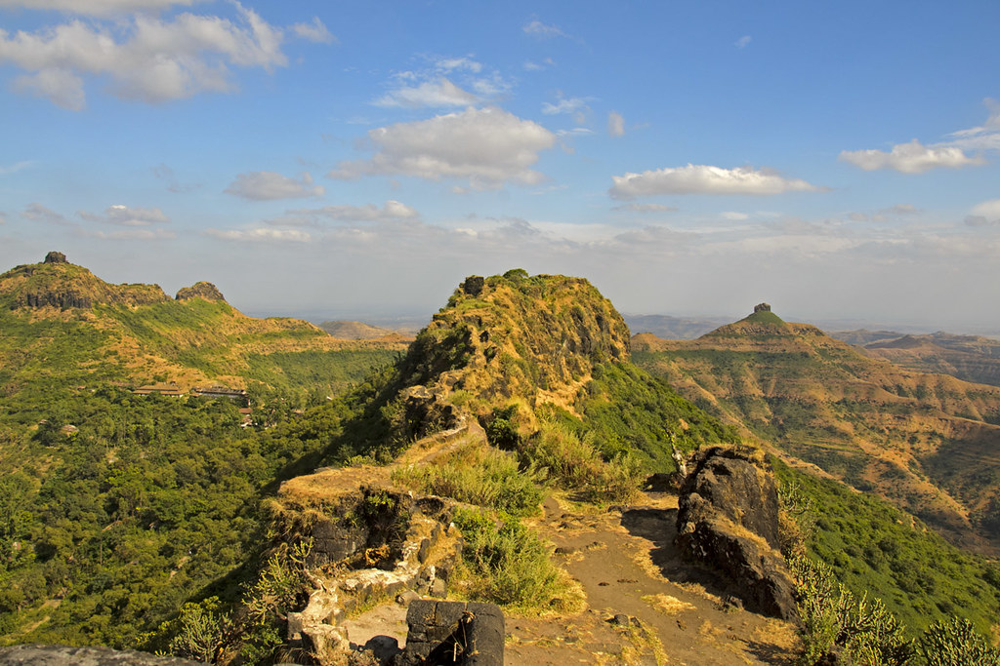

Purandar
 

About
Purandar Fort, also known as Purandhar Fort, is a historically significant hill fort located in the Western Ghats of Maharashtra, India. It is situated near the town of Saswad, about 40 kilometers southeast of Pune city. The fort is strategically positioned at an elevation of approximately 4,472 feet (1,387 meters) above sea level, offering stunning panoramic views of the surrounding landscape.
History:
The fort has a rich history that dates back to ancient times. It was originally known as "Purandaricha Dongar" or "Purandaricha Killa" in Marathi, named after the ancient Yadava king Purandar, who is said to have established it. Later, the fort came under the control of several dynasties, including the Bahamanis, Nizamshahis, and Adilshahis.
One of the most notable chapters in Purandar Fort's history is its association with the Maratha warrior king Chhatrapati Shivaji Maharaj. In 1646, Shivaji captured the fort from the Bijapur Sultanate, and it became one of the 23 forts he acquired during his military campaigns. Shivaji used the fort strategically to safeguard the surrounding region and as a secure location for his treasury. In 1670, during the Treaty of Purandar, Shivaji had to surrender the fort to the Mughals, but he later recaptured it in 1673.
Purandar Fort has seen multiple conflicts and battles, and it remained under Maratha control until the British East India Company took over in the early 19th century.
There are several significant structures within the fort, such as:
Bale Killa: Also known as the Upper Fort (Purandar), this section houses ancient granaries, a temple, and water cisterns.
Shiva Temple: A temple dedicated to Lord Shiva, which holds religious importance for visitors and locals alike.
Dilli Darwaja: This gate commemorates the Maratha victory over the Delhi Sultanate.
Statue of Murarbaji Deshpande: A statue dedicated to a courageous Maratha commander.
Trekking and Tourism:
Purandar Fort is a popular destination for trekkers, history enthusiasts, and nature lovers. The trek to the fort involves a moderately challenging climb, and the path is adorned with lush greenery, making it a picturesque journey. The fort's historical significance and the breathtaking views from the top attract a steady flow of tourists.
Purandar Fort continues to be a symbol of Maratha valor and plays an essential role in Maharashtra's rich cultural heritage. It stands as a testament to the architectural brilliance of the past and the strategic acumen of its various rulers.